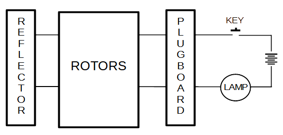
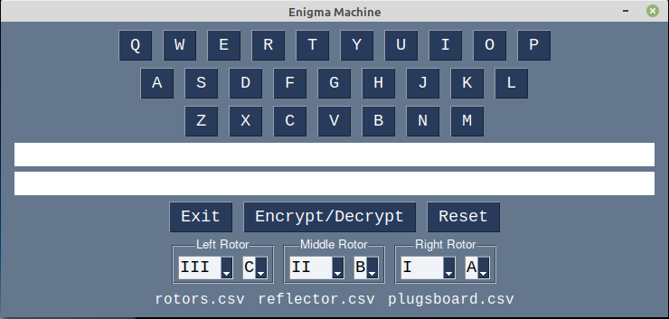
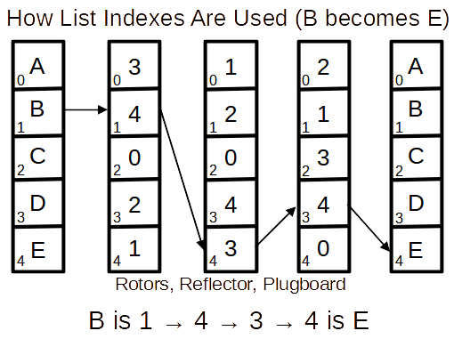

This diagram shows of an enigma machine electrical circuit.

It shows several things the simulation needs to be careful with
The question is "where in the circuit to place the plugboard"?
I found the explanation in Wikipedia
A cable placed onto the plugboard connected letters in pairs; for example, E and Q might be a steckered (plug) pair. The effect was to swap those letters before and after the main rotor scrambling unit. For example, when an operator pressed E, the signal was diverted to Q before entering the rotors.
It seems to indicate that the plugboard was used before and after the rotor scrambling. That is, twice in a circuit. After the pressed key and after the scrambling. This is how I implemented it in my code. It seems to work.

list indexes are used by the simulation. Alphabetic characters are only used when getting data from or displaying information to the user. For example:

Note: lists and list-indexes are faster and simpler to use in the simulation.
Each rotor, reflector, plugboard can be modeled with a Python list. Each rotor, reflector, plugboard is part of an electric circuit. Each has a "in" pins and an "out" pins which, when connected together with their pins touching form an electric circuit. The list's indexes (0-N) are the "in" pins and the list values (0-N) are the "out" pin. The reflector and plugboard are fixed, but the rotors rotate changing the circuit's path.
Each rotor, reflector, plugboard can also be considered a substitution cipher. The list indexes are the "input" characters and the list's values are the "output" characters.
Python lists and dictionaries can be used to simulate the plugboard, rotors, reflector, and keys.
The GUI was created using the Python PySimpleGUI module.